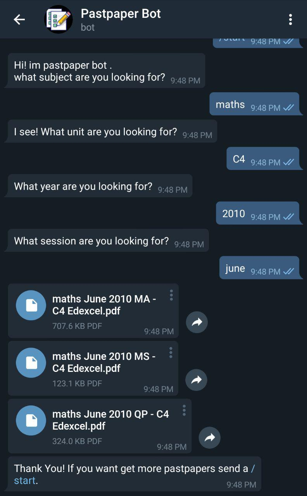

2 minutes
Automating the boring stuff: past papers
While i was studying for A levels. I found out i was spending a lot of time searching for and downloading past papers. Since the sites that offered these files were clumsy had not so great ux. Finding a single past past paper required you to naviagte to at least three pages. The final page being an index of all past papers for that particular subject. so like any sane person I went on and created pastpaper bot aka ppbot. Which quite a few students found useful

ppbot is simple and asks you only what you need and sends the pdfs for pastpapers
source code for ppbot is available here
How it works?
I found out that the pastpaper sites are like huge indexes containing files which are named to a standard convenient format. i used this to my advantage an wrote a quick scraper. The final scraper takes works like this
scrp.py --url https://www.physicsandmathstutor.com/past-papers/a-level-physics/edexcel-unit-2/
The scraper identifies the subject and unit of the past paper and stores all entries on the url to a mongodb db . Another script then downloads these pdfs and makes them available locally
The telegram bot
Making the telegram bot was quite straight forward i just had to get enough data from the user and call the db to get the files. I used the python telegram bot package to easily interact with telegram.
support
I didnt expect much if any users to actually use it other than me. But by the time the exams ended the bot had served more than 2000 pastpapers to more than 50 unique students.